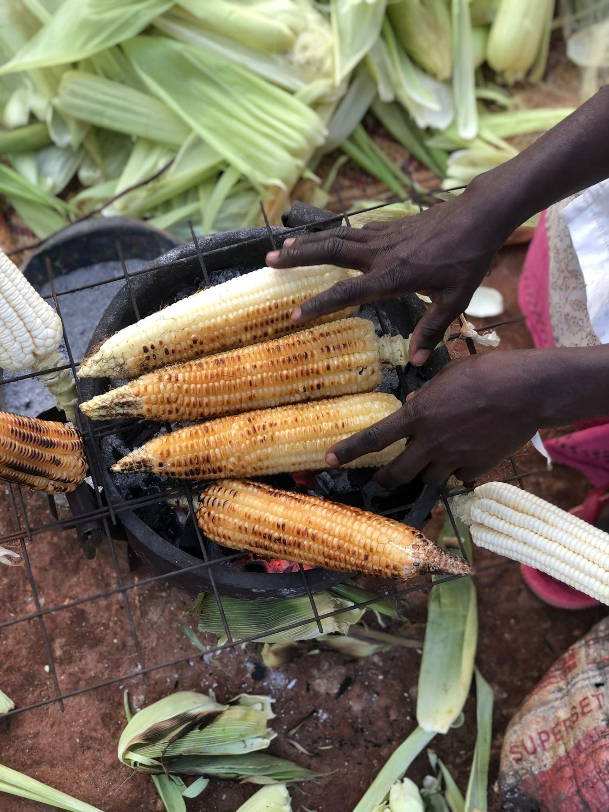
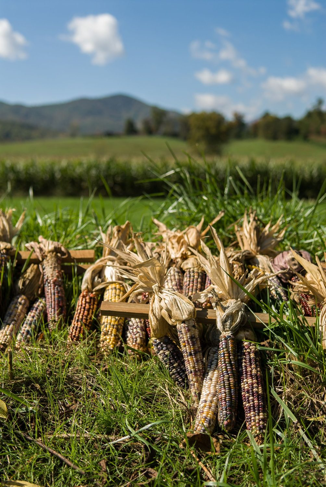
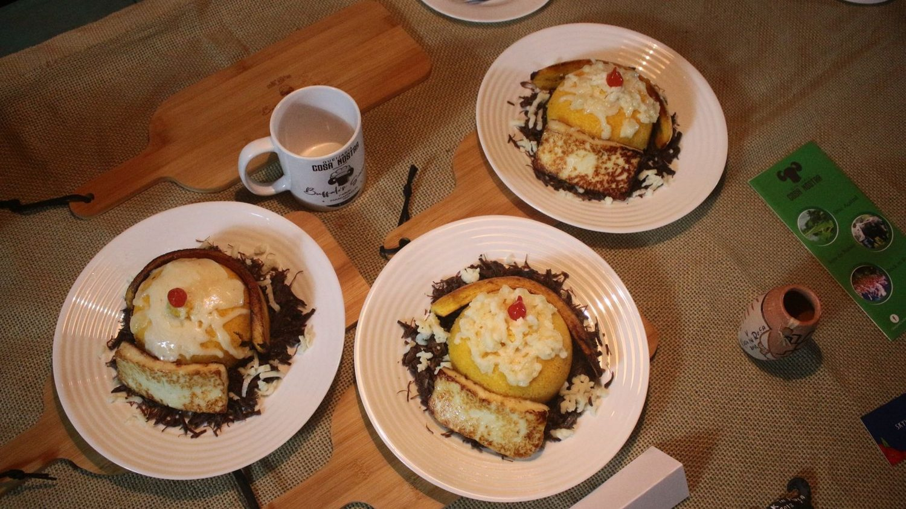
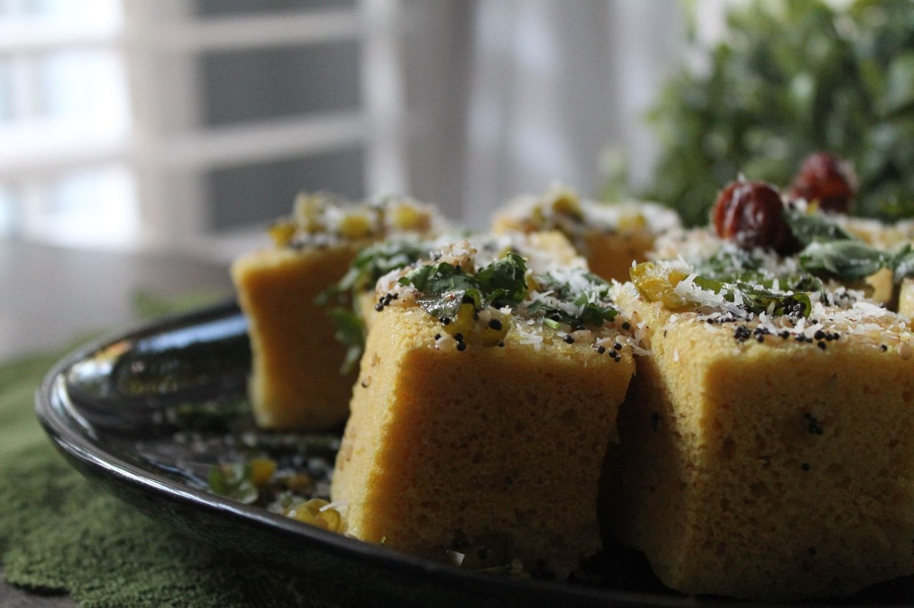

The Cook & The Corn
One cook, one crop, eleven seasons.
I'm June Hollis, forty-seven, born two townships over from where I cook now. I spent ten years in restaurant kitchens in Minneapolis, good ones, and came home to Winneshiek County because I was tired of cooking food that arrived on a truck from somewhere the cook had never stood. Here, the menu walks in from the field — and for one crop, it walks in all year.
People ask why only corn. Because corn is four crops wearing one name, and most cooks only ever meet the sweetest one, in August, and think they've met the family. The dent corn that becomes meal and hominy, the flint that grinds into polenta, the popcorn my grandmother cracked between her teeth to test the dryness — those are winter corn, store corn, the corn that carried this county through every February before freezers. A harvest feast that only celebrates August is celebrating half the plant.
So my year runs like this: fresh feasts from late July, when the first sweet corn comes in, to the middle of October. Thanksgiving cooked from the early store — the first milling, the first nixtamal. Then the Store Supper in February, to prove the cupboard. Then the quiet months: milling, soaking, planning, and walking fields with the farmers who'll feed next season's tables.
The corns I cook
Four varieties do nearly all the work. I buy from eleven farms within forty miles, and I can tell you which field every crate came out of — that is not a slogan, it is the delivery notebook.

Four corns, four jobs
Variety Ledger| Variety | Kind | What it's for | When it eats |
|---|---|---|---|
| Bodacious | Sweet corn | On the cob, creamed corn, succotash, sweet-corn ice cream | Picked July–September; on the fire within hours, never days |
| Bloody Butcher | Dent | Stone-ground meal, nixtamal hominy | Harvested dry in October; stores the whole year |
| Glass Gem | Flint | Polenta meal, coarse and sweet | Dry in October; the prettiest ear in the county and the hardest |
| Dakota Black | Popcorn | Popcorn brittle, dessert crunch, the children's course | Dry in October; pops best after a full winter's rest |



Keeping the surplus
A harvest is a glut by definition: everything ripens at once, and the cook's real job is arguing with time. Three old arguments, all still winning.
Drying. Dent and flint corn dry on the stalk until the kernels dent and the husks rattle — down near fifteen percent moisture — then come in by the crate to finish in the barn. Shelled, they keep a year in sealed bins. This is the meal corn, and October's milling day is the loudest, dustiest, happiest day of my year.
Nixtamal. Dried field corn simmered in water with slaked lime, rested overnight, then washed until the skins slip and the water runs clear. The lime does quiet chemistry — it frees the niacin the corn locks away and loosens the hull — and turns hard dent kernels into hominy: plump, earthy, faintly floral. Ground wet instead, it's masa. I nixtamalise every fortnight all winter; the pot never really cools.
Freezing. Sweet corn waits for no one, so at the September peak we cut creamed corn by the hundredweight — kernels and their milk, blanched three minutes, frozen flat in trays. In February it tastes like an argument September won.
The field kitchen
The whole kitchen travels in one truck: two iron grate stands, the copper polenta pot, six cast-iron skillets, a crate of enamel plates, and tables for 150. The fire is lit three hours before the first guest sits down — an hour for the oak to burn to coals, and two hours of cooking that cannot be hurried, polenta first among them. I bring 200 litres of water, my own wood, and a rain plan: a lean-to for the fire and a barn or tent for the table. In eleven seasons, weather has moved my feasts indoors four times and cancelled none.
What I don't bring: a generator, a gas ring, or a holding cabinet. Corn cooked over oak and served when it's ready does not need keeping warm. It needs people sitting down on time — the one thing I ask of every host, in writing, twice.